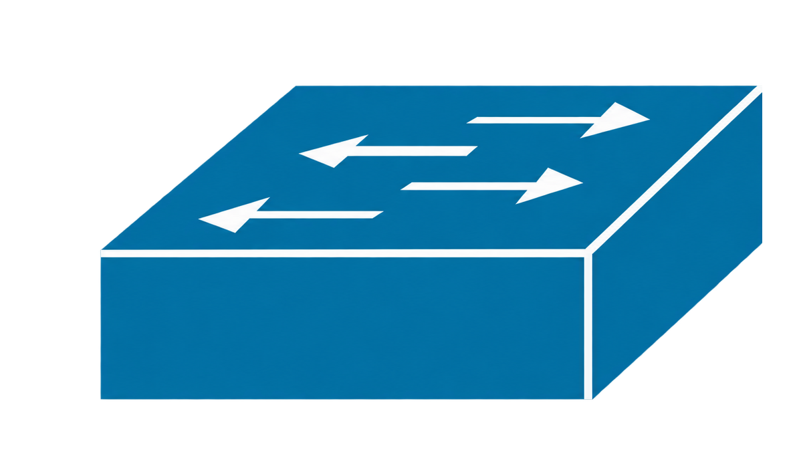
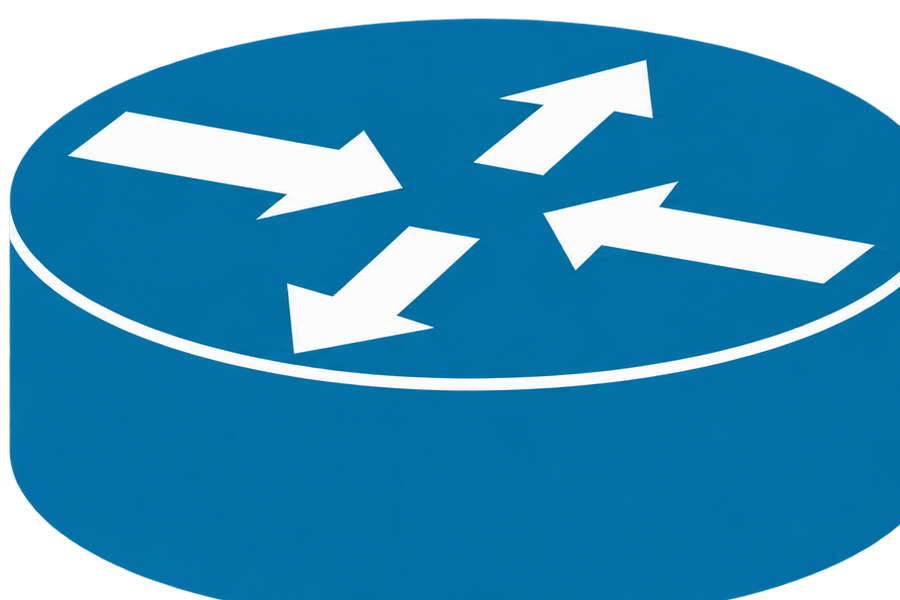

Módulo 03
Rutas estáticas.
Una ruta estática le indica al router exactamente cómo llegar a una red que no está conectada directamente.
Qué debes conocer
Necesitas la red de destino, su máscara y la IP del siguiente router. En este ejemplo, el vecino tiene la IP 10.0.0.2 y conoce la red remota 172.16.20.0/24. Una ruta por defecto se usa cuando no existe una ruta más específica.

S1172.16.10.0/24
R110.0.0.1/30
Desde R1, la ruta estática apunta a
172.16.20.0/24 mediante el siguiente salto
10.0.0.2.
Agregar las rutas
Router(config)# ip route 172.16.20.0 255.255.255.0 10.0.0.2 # envía la red remota al siguiente salto
Router(config)# ip route 0.0.0.0 0.0.0.0 10.0.0.2 # crea una ruta por defectoTres routers: llegar a una LAN más lejana
Ahora R1 y R3 no son vecinos: entre ellos está R2. La imagen separa las tres LAN de las dos WAN. Cada router ya conoce sus redes conectadas directamente; las rutas estáticas se usan para las redes que están más allá de su vecino.
Los switches conectan equipos dentro de cada LAN; las rutas se configuran en R1, R2 y R3. Los puertos serie del esquema son ejemplos: usa los números disponibles en tu modelo de Packet Tracer.
Direcciones del laboratorio
Configura primero las interfaces con estas direcciones y actívalas con no shutdown. En los tres routers habilita ipv6 unicast-routing. Si usas enlaces serie, el extremo DCE necesita reloj. Los equipos de cada LAN deben tener como gateway la IP de su router en esa LAN.
| Red | R1 | R2 | R3 |
|---|---|---|---|
| LAN 1 | 192.168.10.1/24 2001:db8:10::1/64 | — | — |
| WAN 1 | 10.10.0.1/30 2001:db8:100::1/64 | 10.10.0.2/30 2001:db8:100::2/64 | — |
| LAN 2 | — | 192.168.20.1/24 2001:db8:20::1/64 | — |
| WAN 2 | — | 10.10.1.1/30 2001:db8:101::1/64 | 10.10.1.2/30 2001:db8:101::2/64 |
| LAN 3 | — | — | 192.168.30.1/24 2001:db8:30::1/64 |
R1: primero WAN 2, luego LAN 3
Queremos que la ruta a LAN 3 señale la dirección de R3 en WAN 2 (10.10.1.2). Como R1 no está conectado a WAN 2, primero le indicamos que esa red se alcanza mediante R2 (10.10.0.2). Así R1 puede resolver el siguiente salto de la segunda ruta. En IPv6 se aplica la misma lógica con 2001:db8:101::2.
! R1 · IPv4
R1(config)# ip route 10.10.1.0 255.255.255.252 10.10.0.2
R1(config)# ip route 192.168.30.0 255.255.255.0 10.10.1.2
R1(config)# ip route 192.168.20.0 255.255.255.0 10.10.0.2
! R1 · IPv6
R1(config)# ipv6 route 2001:db8:101::/64 2001:db8:100::2
R1(config)# ipv6 route 2001:db8:30::/64 2001:db8:101::2
R1(config)# ipv6 route 2001:db8:20::/64 2001:db8:100::210.10.0.2 o 2001:db8:100::2), no necesitas crear antes la ruta a WAN 2. No configures ambas variantes a la vez en este ejercicio.R2: dirigir cada LAN hacia su extremo
R2 tiene conectadas WAN 1, WAN 2 y LAN 2. Solo necesita rutas a LAN 1 por R1 y a LAN 3 por R3.
! R2 · IPv4
R2(config)# ip route 192.168.10.0 255.255.255.0 10.10.0.1
R2(config)# ip route 192.168.30.0 255.255.255.0 10.10.1.2
! R2 · IPv6
R2(config)# ipv6 route 2001:db8:10::/64 2001:db8:100::1
R2(config)# ipv6 route 2001:db8:30::/64 2001:db8:101::2R3: preparar el camino de regreso
El tráfico de LAN 1 a LAN 3 requiere respuesta. Para mantener el mismo ejemplo de siguiente salto remoto, R3 aprende WAN 1 por R2 y después LAN 1 por la dirección de R1 en esa WAN. LAN 2 se alcanza directamente a través de R2.
! R3 · IPv4
R3(config)# ip route 10.10.0.0 255.255.255.252 10.10.1.1
R3(config)# ip route 192.168.10.0 255.255.255.0 10.10.0.1
R3(config)# ip route 192.168.20.0 255.255.255.0 10.10.1.1
! R3 · IPv6
R3(config)# ipv6 route 2001:db8:100::/64 2001:db8:101::1
R3(config)# ipv6 route 2001:db8:10::/64 2001:db8:100::1
R3(config)# ipv6 route 2001:db8:20::/64 2001:db8:101::1Comprobar ida, regreso y resolución
En R1 revisa que la ruta a LAN 3 aparezca en ambas tablas. Después prueba desde un equipo de LAN 1 hacia otro de LAN 3, tanto por IPv4 como por IPv6. Si falla, comprueba las interfaces, el gateway de los equipos y la ruta de regreso en R3.
R1# show ip route 10.10.1.0
R1# show ip route 192.168.30.0
R1# show ipv6 route 2001:db8:101::/64
R1# show ipv6 route 2001:db8:30::/64
R1# traceroute 192.168.30.12001:db8::/32 se reserva para documentación y laboratorios; sustituye estas direcciones por las de tu actividad. Según la versión de Packet Tracer y el modelo de router, la visualización de rutas recursivas puede variar: lo decisivo es comprobar la tabla y la comunicación de extremo a extremo.